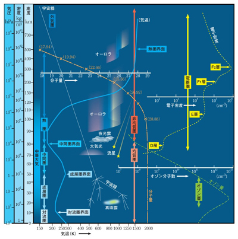

大気流体の研究内容
「大気流体力学」と聞いても、何について研究しているのかピンとこない人が多いでしょう。 私たちの研究室では、地球の大気と惑星の大気における様々な現象について研究しています。
上の図は、地球の大気の鉛直構造を示しています。 地球の大気は下から、対流圏、成層圏、中間圏、熱圏(電離圏)という名前がついています。 対流圏では、雨や雲、台風など、皆さんがよく想像する「天気」が起きています。 一方で成層圏よりも高いところはあまり馴染みがない方が多いと思いますが、科学的に面白い現象がたくさんあります。 各領域の紹介と共に、様々な現象について覗いてみましょう。